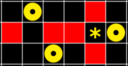
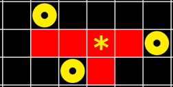

La version actuelle ne permet pas d'avoir 2 IA simultanées
Humain hors ligne : Vous, ou quelqu'un jouant sur cet ordinateur, sans limite de temps.
IA Hasard : peut jouer pratiquement n'importe quel coup, avec une préférence pour sa couleur.
IA xxx tours : regarde toutes les possibilités sur les xxx prochains tours (temps de calcul exponentiel)
et prend celle maximisant les graines et le score qu'elle a d'avance sur son adversaire.
Pour l'instant, seul Humain hors ligne fonctionne pour Jaune.
Humain hors ligne, IA hasard, IA 1 tour et IA 2 tours fonctionnent pour Bleu.
Oublier: efface la partie actuelle de l'historique.
Nouveau: sauvegarde et réinitialise (vide le plateau).
Précédant / suivant: navigue entre les parties enregistrées.
Sauvegrader: affiche ici (texte, JSON) le compte-rendu de la partie actuelle.
Charger: quitte. Joue avec la partie visible dans l'encadré ci-dessus (texte, JSON).
Il est possible de copier-coller du texte dans l'encadré pour exporter une partie ou voir la partie d'un ami.
Ce jeu peut se jouer sur un plateau carré de
,
,
ou
cases de côté.
Deux jardiniers doivent se partager un même potager.
L'un préfère les aubergines (bleu) et l'autre les maïs (jaune).
Chacun veut recouvrir un maximum de cases avec des cartes son légume préféré.
Chaque case recouverte par une carte de sa couleur vaut 1 point.
En fin de saison, celui qui en a le plus gagne.
En début de saison, le plateau est entièrement vide. Il sera ensuite possible de planter des graines (cartes occupant une seule case chacune),
ou de faire pouser des rangées d'un même légume.
Les rangées mesurent 2, 3, 5, 8 ou 13 cases de long et une case de large.
Pour poser une rangée, il faut qu'elle touche suffisemment de graines, de la même couleur.
Plus une rangée est grande, plus il faudra de graines :
| Taille de la rangée à poser | Graines nécessaires |
|---|---|
| 2 cases | 1 graine |
| 3 cases | 2 graines |
| 5 cases | 3 graines |
| 8 cases | 4 graines |
| 13 cases | 6 graines |
si une carte est posée sur d'autres cartes, les recouvrant partiellement ou entièrement:
Pour réinitialiser et choisir la taille du plateau, cliquez sur les boutons 3, 5, 8, 13 en haut de la notice.
La couleur du tour du plateau indique qui doit jouer. Si la partie est terminée, le quadrillage se met de la couleur du gagnant.
Pour poser une carte, il faut cliquer sur les deux extrêmités de celle-ci. S'il s'agit d'une graine, il faudra seulement cliquer deux fois sur la même case. Après un premier clic, toutes les cases correspondant à une action valide sont représentées en rouge.
 Clic gauche : joue pour soi. S'il y a des cases rouges : valide.
Clic droit : joue pour l'autre. S'il y a des cases rouges : annule.
Les cases rouges apparaissent uniquement s'il y a plusieurs possibilités.
Si vous faites une erreur (premier clic qui ne permet pas de poser),
l'ensemble des cases valides sera temporairement affiché en marron.